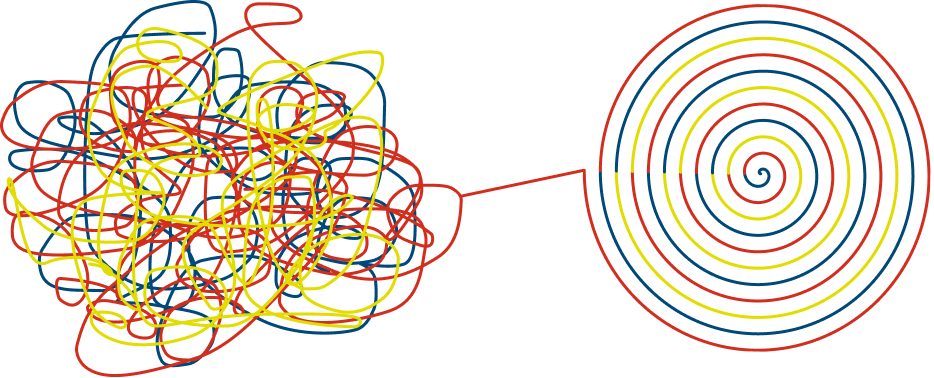

I would have loved to gain a broader perspective if time permitted, as my survey sample was uneven by role and discussion relating to hosting options were conducted internally within the team due to time constraints.
I redesigned the Capital One Financial Services design system documentation site to reduce inconsistencies between design and code, leading higher quality experiences. Due to NDA visuals for this project cannot be shared publicly.

Design and code were frequently out of sync, so users of the design system pursued frequent ad-hoc support from the Foundations team. Not only did this mean that the created experiences were below the quality bar, but the foundations team had to use time that needed to be spent on improving the system on providing support instead.
After conducting research to understand what about the system was creating confusion, I found that all of the issues boiled down to improper documentation. This led me to two questions that needed to be solved:
In order to fix the documentation problem, I presented a three part solution.
The two major points of friction were the out of sync design and code and reliance on direct support from the Foundations team. I needed to understand what and where specifically was the cause of this issue and to identify which problems warranted deeper investigation.
Research questions:
What problems are showing up across the design system experience?
Which experiences are connected?
Do both designers and developers experience the same issues?
How can these problems be addressed with a single solution that can be tackled within the 10 week constraint?
In order to gain a better understanding of what the current landscape regarding the design system looked like, I sent out a 25 question survey to Financial Services designers and developers. I covered demographics, comfortability with the system, design system health, documentation, and reliance on the Foundations team. Specific areas included questions about update frequency, design-code parity, component and variant coverage, depth, accuracy, discoverability, workflow fit, role, and tenure. The survey received approximately 80 responses, with about a 65/15 design/developer fit. I used the role split to see if the same patterns appeared in both groups.
Cleaned and structured survey responses in Python/Pandas for analysis.
After the survey analysis, I conducted 13 user interviews across designers and developers to explore the patterns further. I also completed a competitive analysis of other companies' design-system documentation, including IBM Carbon and REI Cedar, and an audit of the team's existing resources, including the internal component library and internal documentation website.
Four main areas of friction:
Documentation is the Common Thread: Looking at the relationships surfaced from the Spearman correlation, I saw that better documentation could potentially improve handoff, help people understand the system, and reduce their reliance on the Foundations team. At the same time, the survey also showed me why the existing documentation was not already doing that job. It lacked depth, accurate design-code implementation specs, and users did not believe it was reliable.
Survey findings by group:
| Group | Findings |
|---|---|
| New users | Leaned on the Foundations team the most and needed a clearer entry point |
| Tenured users | Struggled with outdated pages/mismatches and needed current, synchronized pages |
| FE Developers | Needed accurate implementation details |
Key Insight: “Needs to be written like a designer who has mid-level knowledge, but it needs robust enough for a beginner to use”
Looking at external design documentation sites such as IBM Carbon and REI Cedar, I identified that successful docsites featured complex use case examples and clear direction on when a certain variant would be used.
The audit revealed that the current documentation site has an identity crisis. The site lacks a clear, focused purpose and attempts to serve too many functions, failing to excel at any. The navigation is confusing and the content specifications are stale/superficial.
I evaluated three hosting approaches against the team's actual constraints: engineering bandwidth, existing tool adoption, and budget. I had discussions with members of the Foundations team to narrow down three options to explore.
Fast to stand up, meets designers and developers where they already work, offers limited customization
Could leverage Gemini as a built-in search/reference layer but adds another disconnected surface to maintain
Offers the most flexibility (sandboxing, AI integration, full customization) but requires more engineering resources than the team currently has
I recommend Google Sites. With limited budget and no dedicated engineering capacity for a custom build, this is the option that can realistically be implemented and maintained by the team alone. It also matches a clear pattern from the research: designers and developers are already working in Google's ecosystem, so meeting them here wouldn’t require teams to adopt a new platform or the Foundations team to maintain content in multiple places.
To make this actionable, I propose a resolved sitemap that reorganizes content into clear categories (Design System, Branding, FS Brand Strategy, Guides) so that foundational content, component specs, and brand guidance are no longer competing for the same navigational space.
Each component page should include context for when and why to use the component, do's and don'ts, implementation guidance, and a full showcase of variations. I proposed this after noticing that while it's expected and accepted for interns to ask frequent questions as they onboard, full-time designers and developers who are equally new to the system don’t have that same built-in permission to lean on the Foundations team repeatedly, which leaves them stuck without a reliable way to close the gap themselves.
This reframing and the content strategy approach were well received by leadership, and the Foundations team confirmed they planned to continue iterating on and implementing the sitemap, content strategy, and Google Sites direction going forward.
I would have loved to gain a broader perspective if time permitted, as my survey sample was uneven by role and discussion relating to hosting options were conducted internally within the team due to time constraints.

I was able to use my perspective as an intern to drive the design forward, which felt valuable. I appreciated how willing all the designers and devs I spoke with were to provide me with guidance and support during the project. It's important to lean into your role as an intern and also treat it as a hands-on learning experience.